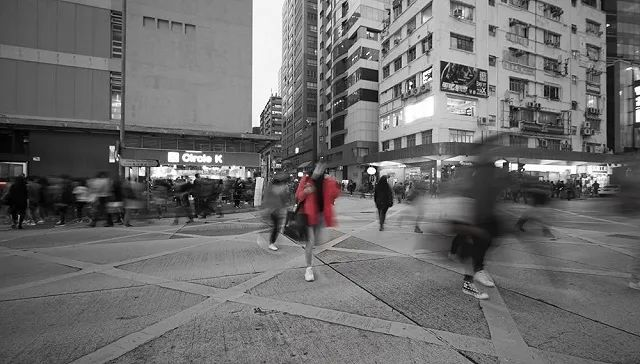
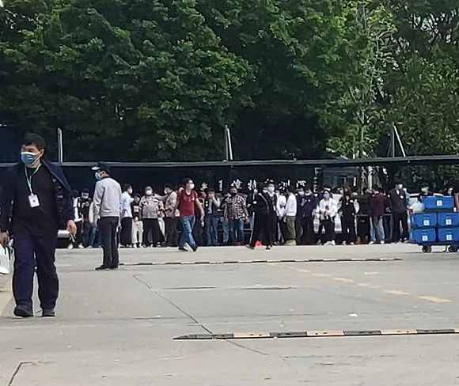

富士康最难最贵“复工季”：北上广深部分中介获得返费高达17000元
原文链接 备份链接 以下文章来源于等深线 ，作者蒋李超程陈郝 中国经营报《等深线》记者 蒋政 李超 程维 陈佳岚 郝嘉奇 郑州、烟台、重庆、太原报道 在富士康工作了10余年的崔永强（化名），直至2月27日，还没有结束今年的春节假期。因为 …

图片来源：unsplash
记者：徐诗琪 编辑：林腾
“
“这是我十几年来看过最缺人的一次！”
”
“之前每小时19块，现在24块，每个月我能多赚1300块，拼了。”2月27日晚上，29岁的王久拎上书包，坐上了前往深圳罗湖的火车。
王久来自江西赣州，几个小时之后，他将在深圳福田参加一场联想工厂的面试，成功之后可能被安排到联想的电脑、服务器、手机的组装、包装的流水线上工作。
联想开出了每小时24块的“高薪”诱惑工人们的到来。时薪比以前多了5块钱，涨幅26%，这是几年来联想工厂薪水的巅峰了。
去年开工的时候，火车票已经一票难求。但如今在“新冠”疫情的影响之下，王久乘坐的K115次列车上的乘客聊聊无几，车站也空荡荡。
王久不知道，像他这样决定冒险“南下”的普通流水线工人，如今已经成为了深圳各大企业争相抢夺的对象。
“紧急通知，连夜涨价！”一家工厂在招工信息上打上了这样的标题。
深圳工厂的确太缺人了。尽管政府与企业都使出了浑身解数，包车、包专列、甚至包飞机接送员工返深，但仍然缓解不了工厂的燃眉之急。因为其他地区交通管制依旧严格，内地人员外出需要开具证明，而已到深圳的人又面临着不短的隔离时间。
界面新闻了解到，富士康深圳的工厂里面的人不到以前的一半，也因产能不足已经导致了新iPhone的发布延迟。几个比亚迪厂区，合计人员缺口达到2000多。联想深圳工厂一天内至少面试了600人。

联想招工现场。 图片：受访者提供
人员无法流动，新人又补不满旧窟窿，在制造业发达的深圳，从事最基础工作的工人群体突然成了稀缺物种。
抢人大战也随之一触即发。界面新闻了解到，OPPO发起“春风行动”，向员工聚集的七个地市派出免费专车，接员工回工业园，并提高基本工资与加班补贴以招聘新工人。立讯精密开通了两条免费专列高铁，每天2班，每班500，同时对内推入职的员工每月奖励上千元。创维也大力宣传其内推活动，对推荐人奖励最高1500元，被推荐人最高1200元。
代理工人招募的深圳市新路程人力资源负责人胡先生甚至对界面新闻感叹：“这是我十几年来看过最缺人的一次！”
缺人的困境，富士康首当其冲。
富士康龙华和观澜厂区，这里曾经聚集着深圳最大规模的流水线工人。但如今，厂区大部分的餐饮娱乐设施都大门紧闭，虽然食堂依旧开门，但原先的餐桌被高高的纸板分隔成了四个小方块。厂里对员工们建议：不交谈、快速就餐。

复工后的富士康食堂。图片：受访者提供

厂区内大部分餐厅未开门。图片：受访者提供
“厂里面的人不到以前的一半吧。”富士康工人周星对界面新闻记者说。他所在的GIS事业群（业成光电）负责苹果某产品的屏幕测试，车间里原先有5条流水线，现在只能开动3条。
据周星介绍，因为有部分员工在假期留守，富士康其实一直没有停过工，只在春节期间放了四天假。疫情来袭，富士康还加开了口罩产线，部分员工被分配去生产口罩。
《财新》的报道曾经提到，富士康深圳园区共18万人，春节期间留守2万人，当时预计只有5.7万员工能在10号以前返回深圳。
为了应对巨大的人员缺口，富士康双管齐下：一边对老员工进行分三批次的有序复工，另一边，通过高价的内部推荐，奖励招募新工人。
“推荐入职就奖7710元，这是龙华富士康有史以来最高的奖金了。”界面新闻记者以求职者身份咨询一位富士康招募中心的唐先生，他热情地回复。
2月21日，富士康内部招聘软件“我要聘”发布信息显示，IDPBG（数位产品事业群）龙华厂区需求人数7000人，观澜厂区20000人，需求逼近三万人。
IDPBG针对内部推荐的新员工和离职返聘员工，对每人奖励6750元，加上360元的新人入职奖，最高可以拿7710元奖励。
内部推荐一直是目前富士康等工厂主要的吸引招工手段。工厂的基础工资往往只达到最低工资标准2300元左右，工人们想增加收入，靠的就是加班或者就是想办法去拿内部推荐的奖金。
根据记者了解，多家工厂都采取了类似的手段。比如创维光电开出1000元内部推荐奖，拉人越多奖励越多；海德门电子开出1000元的隔离补贴；一些小厂也增加了新人入职奖金。
在工人们的眼里，富士康算得上是一家“高薪”企业，因为福利好，工资高，甚至被他们称作“养老康”。
因此，即便在疫情之下，富士康依旧让工人们趋之若鹜。界面新闻记者观察到，因为开出了丰厚奖金，报名人数快速地填满需求人数，每过几天，需求人数都会进行上调。
“要快点报名，后面招得差不多了，奖金会减的。”入职后推荐人也有3600元的奖励，唐先生极力邀请。
按照深圳工厂的规则，工人一般分为两种：长期正式工与短期临时工。正式工有底薪，临时工则只算时薪。大部分临时工都由中介代招，工人与中介公司签订劳务合同。
富士康工人周星就是临时工。他今年20岁，正在读大专二年级。1月初，他来到深圳龙华富士康，打算只做三个月的临时工，中介给他开出的工资是前两个月时薪27元，后一个月21元。
一般而言，年底许多工人返回，大部分工厂又着急赶年底最后一批货，因此临时工价在春节前一般会迎来上涨。春节后迎来工人回潮，临时工的工价则随之下调。
但疫情之下，临时工的地位也完全改变了。
工厂一般倾向于招正式工以维持稳定的生产，临时工是被逼无奈的选择。而今年，正式工已经招不到了，许多工厂不得不放开限制，猛招临时工“补一补”。
界面新闻通过中介公司了解到，现在深圳工厂临时工的往年工价在20以内，16-18元为主，现在已经上涨至22左右。而在富士康，临时工工价已经涨到了30元。整体涨幅逼近50%。
周星在3月初的一个晚上收到工作群信息，原先每小时21元的工价被调升到25元，如果能留任至5月，还能涨到27。他表示，收到消息以后，身边许多人都将已经写好的辞职表又拿了回来。
不仅如此，连年龄的限制也被打开。
在工厂默认的规则中，18-40岁是通常的招工年龄区间，但在今年，大部分工厂将年龄上限调到了45岁甚至50岁。
界面新闻记者致电一位创维光电的招工负责人，询问47岁是否能入厂，他回应道：“47年纪有点大了，可能41、42还可以。”
另外，严格的隔离限制也随着复工潮来临、疫情得到控制而渐渐被放宽。
以富士康为例，2月21号其发出的招募流程中显示，隔离天数要求14天，需要先住宿舍隔离，后核酸检测，最后才能面试、入职。日前，这一要求改为不需要再重复隔离，抵深2天即可安排面试，通过通讯商确认14天内行程轨迹（不在重点疫区）后，核酸检测通过即可入职。

富士康面试排队现场 。图片：受访者提供
界面新闻联系多家中介与厂招人士了解到的情况是，有部分厂仍需隔离，时长3-14天不等；而有技术能力的厂，则可以通过通讯商定位等大数据手段查询行程，免去重复隔离手续，到厂当天就能上班。
“今年工厂那边的需求增长了至少30%。”深圳市新路程人力资源市场（下称新路程）的负责人胡先生对界面新闻说。
他所在的人力资源公司为工厂发布招聘信息，原先以线下店内招聘为主，现在主要通过线上公众号发布招聘信息。最近，每天都有200-500人通过他负责的公众号联系工作。
胡先生曾经在新路程服务了上百家工厂，有十多年的中介从业经验。而当下，却是他从业以来人力最紧缺的时候。按照他的说法，普遍工厂人员缺口在五百人左右，多的例如比亚迪缺口2000多人。
中介费也在这个特殊时期应声上涨。以前，中介每帮工厂招一个人收取300-500元的代理招聘费，现在这笔费用每人涨了200元。
尽管如此，线上招聘还是困难重重。胡先生表示，他们通过电话与求职者预约到厂面试时间，确定合规以后，再通知求职者集中到厂。但许多求职者虽然锁定了入职名额，却不能保证能按时上岗，有些人还滞留在家中。
他举了个例子，前段时间新路程为创维预约了1000人的现场面试，结果到了现场，人只来了200个。
主要原因在于，过于严格的隔离和封闭措施导致愿意回深圳打工的人回不来，也有些原在深务工的人出于担心而不愿意回来。
胡先生认为，想解决这个问题，最快的方式就是由地方政府出面，“政府接人、政府招人。”
事实上，深圳市政府也的确正在这样做。据南方网报道，深圳人社局在2月积极通过专车、专列等形式接人，截至2月26日，共安全接回异地务工人员4641人。
另外，深圳人社局也在2月28日上线了“深圳市公益网络招聘月”，为期一个月，联合智联招聘、58同城、深圳人才网等大型网站进行人才招聘，提供超过3千个公司共超过4万人岗位。
部分生产、配送疫情急需物资的企业，还能够向深圳人社局申请“一次性吸纳就业补贴”，每人补贴1000元。
胡先生预计，要到4月中旬这样的用工紧缺状态才能缓解，之后会逐步恢复正常。
（应受访者要求，文中王久、周星为化名。）
未经授权 禁止转载

原文链接 备份链接 以下文章来源于等深线 ，作者蒋李超程陈郝 中国经营报《等深线》记者 蒋政 李超 程维 陈佳岚 郝嘉奇 郑州、烟台、重庆、太原报道 在富士康工作了10余年的崔永强（化名），直至2月27日，还没有结束今年的春节假期。因为 …
原文链接 备份链接 你已选中了添加链接的内容 28.02.2020本文字数：1385，阅读时长大约2分钟 导读：众多参与前程无忧这项“企业复工状况调查”的员工表示，没有工作就没有了收入。调查同时发现，三分之一企业的现金流只能维持1-3个 …
原文链接 备份链接 经济观察网 记者 沈怡然 宋笛 2月20日，刘雨（化名）返岗第一天。 空旷的食堂，暂停的娱乐设施和园区公交车不断提醒他，这是一个和往常截然不同的富士康。 刘雨是工业富联下属公司一名工程师，在深圳龙华厂工作。在刘雨的眼 …
原文链接 备份链接 图片来源：图虫 文：财联社 徐杰 “ 为加大复工力度，郑州富士康再次增加奖励，新入职员工在满足相关条件后可获现金7000元，目前郑州富士康在厂员工已突破2万人，并且不断有新人面试，同时河南省也在动员员工返工。 ” 为加 …
原文链接 备份链接 - 疫 情 之 下 - 正月初七那天，是爸爸所在的工厂高炉熄火的日子。爸爸说，走出工厂时，整个轧钢厂像是一台巨大的发动机，终于停止了转动。 ” 1 不知不觉间，疫情已经沸沸扬扬闹了这么久。 一开始听说新冠状病毒时，我还 …